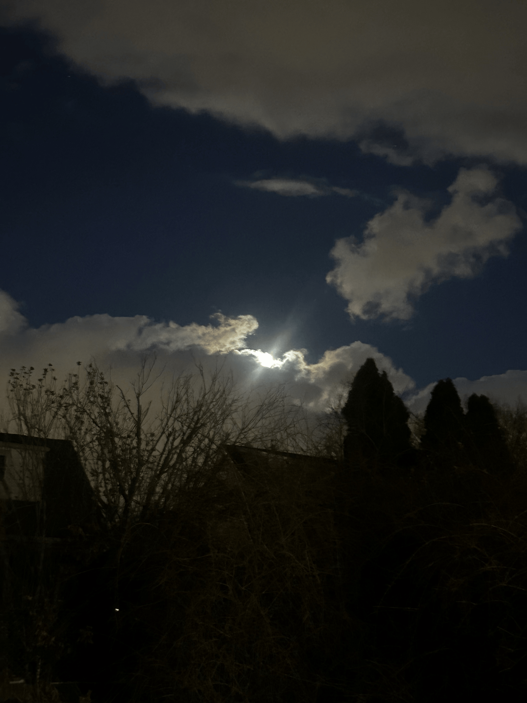
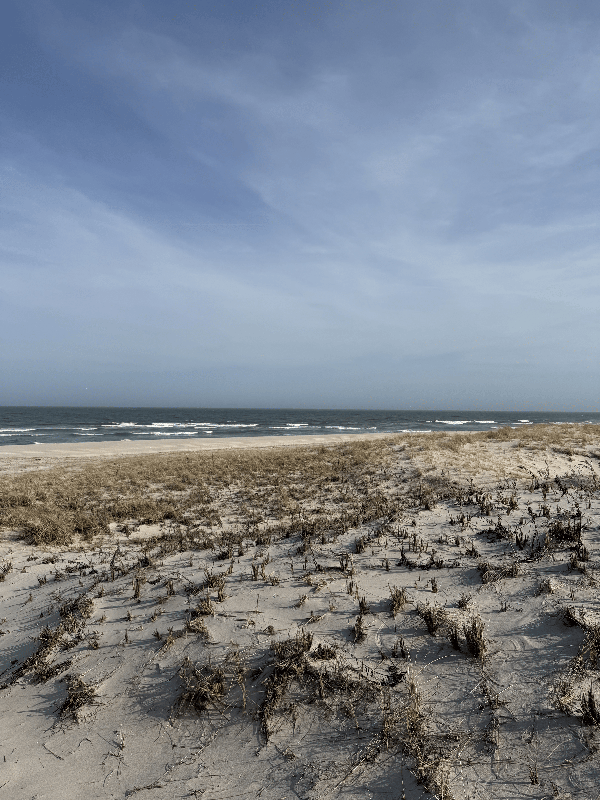
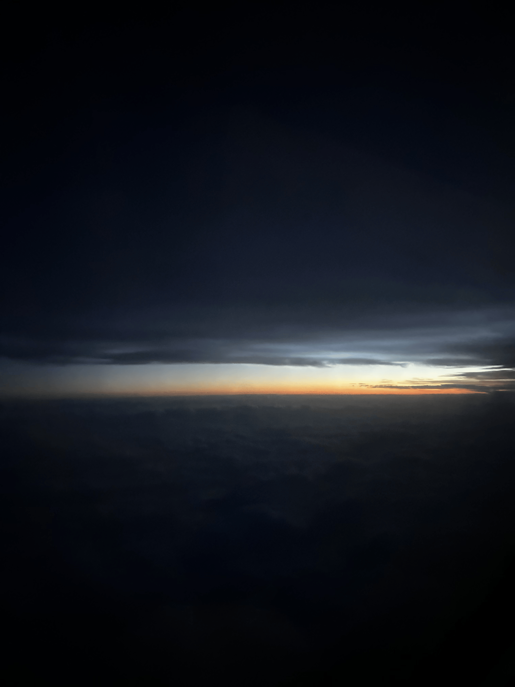
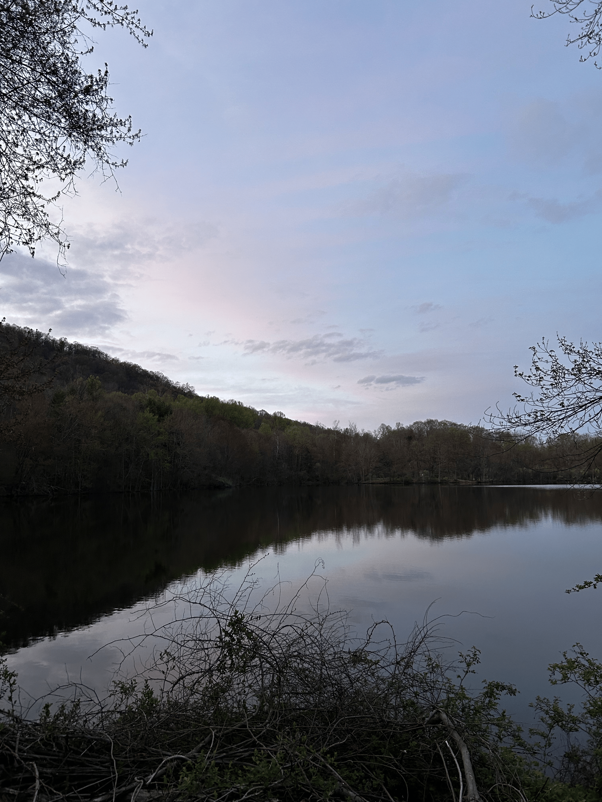
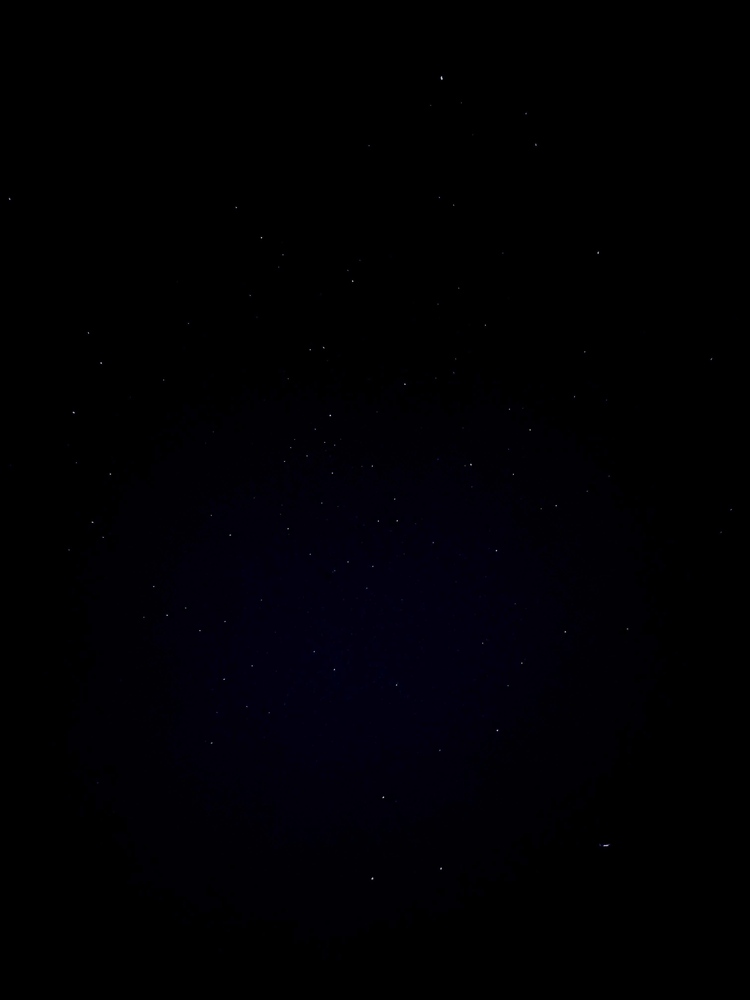
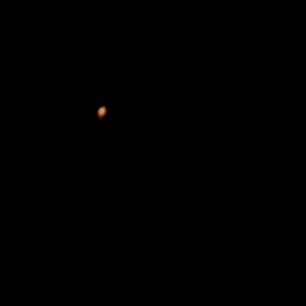
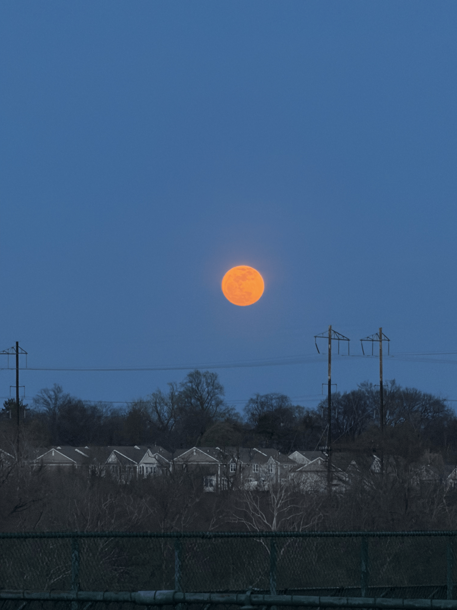
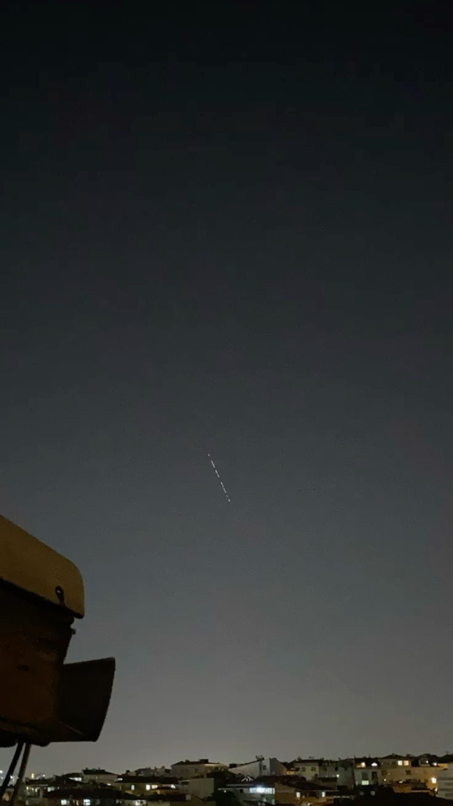
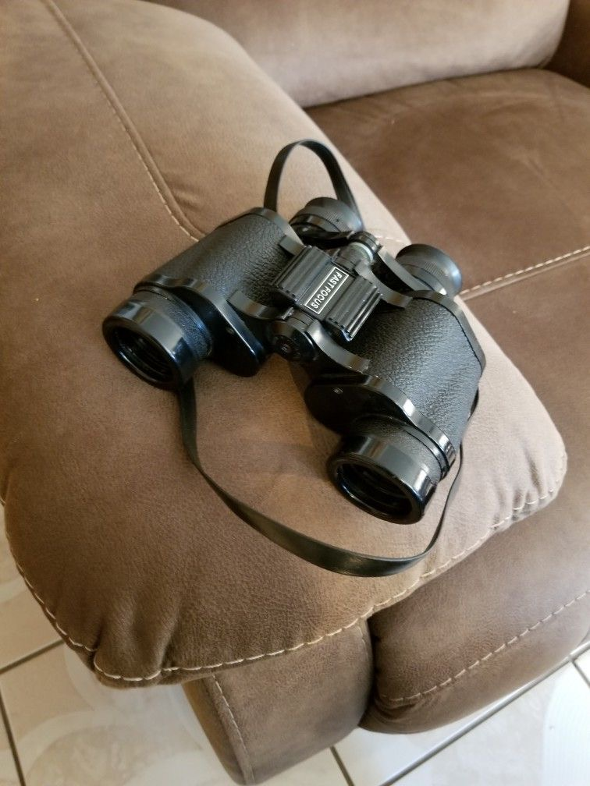

This page is meant to give a general overview of different parts of stargazing by looking at a range of images and examples. Instead of focusing on just one aspect, it breaks the topic into a few main sections, including locations, celestial objects, and equipment. Each section highlights a different part of the experience and shows how they connect to each other.
The images are not just there for visuals, but to show how different environments and conditions can affect what you see and how you experience the night sky. Some of the examples are more practical and easy to access, while others are less common but still important to understand. Along with the images, the tables help organize the information and point out shared traits between different items, which makes it easier to compare them.
Overall, the goal of this page is to make stargazing feel a little more structured and easier to understand. By grouping things into categories and showing both similarities and differences, it becomes clearer how each part contributes to the overall experience.
When I think about good stargazing locations, the first thing that comes to mind is how dark the sky actually is. A place can look great during the day, but that does not always mean it will work well at night. The locations in this group all show different environments, but they share the same basic idea of having a clearer, darker sky compared to more urban areas. Even something as simple as being farther away from streetlights can make a noticeable difference in how many stars you are able to see.
One of the most important factors when evaluating these locations is light pollution. Backyards or beaches can still work, but they often depend on how close they are to towns or cities. Places like lakes or national parks, especially somewhere like Yosemite, tend to be much more reliable because they are farther removed from artificial light. Even being on an airplane can give a unique advantage since you are above a lot of the light and atmosphere, which can make the sky appear clearer than it would on the ground.
At the same time, each location has its own limitations. Some are convenient but not as dark, while others provide better views but take more effort to reach. That trade-off is something that shows up across all of these examples. Overall, these locations highlight how important environment is when it comes to stargazing and how even small differences in lighting and surroundings can change the experience.





| Location | Light Pollution | Accessibility | View Quality | Common Trait |
|---|---|---|---|---|
| Backyard | Medium | Easy | Moderate | Outdoor open sky |
| Beach | Low-Medium | Easy | Good | Wide horizon view |
| Airplane | Very Low | Limited | Very Good | Reduced atmosphere/light |
| Lake | Low | Moderate | Good | Far from city lights |
| Yosemite | Very Low | Moderate | Excellent | Minimal light pollution |
When you are actually stargazing, what you see can vary a lot depending on the time and conditions. Some objects are easy to recognize right away, while others take more attention to notice. The images in this group show a range of common things you might see, including stars, planets, the moon, satellites, and constellations like the Big Dipper. Each of these stands out in a different way.
One of the biggest differences between these objects is how they move. Stars and constellations tend to stay in fixed patterns, which makes them easier to learn over time. Planets are usually brighter and can look similar to stars, but they slowly shift position over days or weeks. Satellites are more noticeable because they move quickly across the sky, which can make them confusing if you are not expecting it. The moon is the easiest to see, but it can also make it harder to see dimmer stars because of how bright it is.
Understanding these differences makes a big impact on how you experience stargazing. Instead of just seeing random lights, you start to notice patterns and movement. That is what makes the experience feel more engaging and less passive. These objects show how much variety there is in the night sky, even if it all looks similar at first glance.





| Object | Type | Movement | Brightness | Common Trait |
|---|---|---|---|---|
| Stars | Star | Static | Low | Visible at night |
| Mars | Planet | Slow Movement | High | Reflects sunlight |
| Moon | Natural Satellite | Slow Movement | Very High | Closest visible object |
| Satellite | Artificial | Fast Movement | Medium | Visible from Earth |
| Big Dipper | Constellation | Static Pattern | Medium | Recognizable shape |
While it is possible to stargaze without any equipment, having the right tools can make a noticeable difference. The two main tools shown here are telescopes and binoculars. Both are used to see objects in more detail, but they are designed for slightly different purposes. Binoculars are easier to use and more portable, while telescopes are better for more detailed and focused viewing.
One of the biggest differences comes down to how much effort someone wants to put into the experience. Binoculars are quick and convenient, which makes them a good option for casual use. Telescopes require more setup, but they allow you to see much more detail, especially when looking at planets or the surface of the moon. That difference makes them better suited for more serious observation.
There are also trade-offs between the two. Telescopes are more powerful but less portable, while binoculars are easier to carry but more limited in magnification. Even with those differences, both tools show how equipment can change the way you experience stargazing by making distant objects easier to observe.


| Equipment | Magnification | Portability | Ease of Use | Common Trait |
|---|---|---|---|---|
| Telescope | High | Low | Moderate | Enhances detail |
| Binoculars | Medium | High | Easy | Enhances visibility |